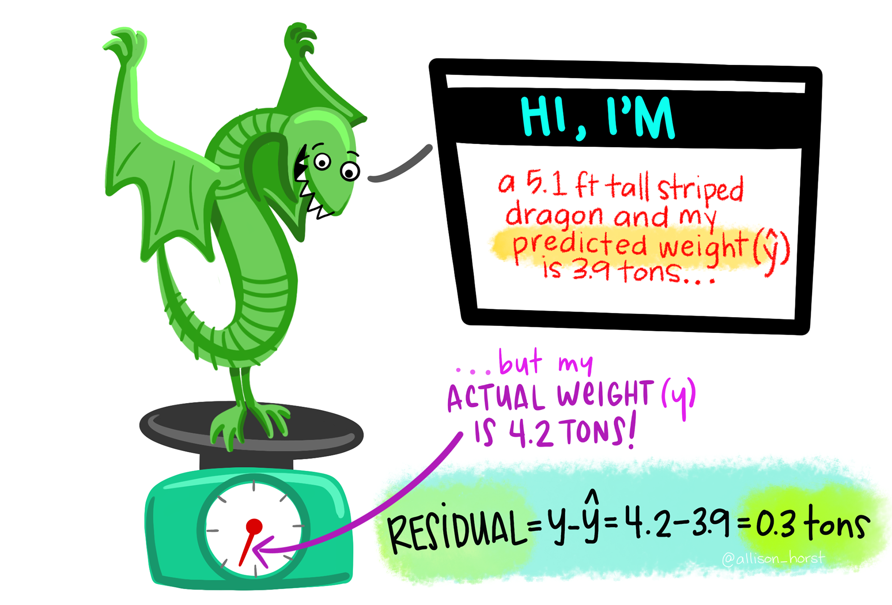

Week 4 Reading Guide: Basic Regression
Modern Dive Chapter 5
In Statistics we like to call our \(y\) variable the “response” variable. What are some other names \(y\) can be called?
In Statistics we like to call our \(x\) variable the “explanatory” variable. What are some other names \(x\) can be called?
What is the difference between “explanatory modeling” and “predictive modeling”?
In “basic” / simple linear regression, how many explanatory variables are included in the model?
In linear regression, what type of variable must our response always be?
5.1 – One Numerical Explanatory Variable
5.1.1 – Exploratory data analysis
What is the response variable for the evaluation study? What is the explanatory variable?
What is “EDA”? Why should you do EDA before you analyze your data?
In the evals_ch5 dataset, can an instructor appear more than once?
What statistics does the skim() function output?
What does a correlation coefficient measure? Specifically, what type of relationship?
For correlation coefficients:
values near -1 indicate:
values near +1 indicate:
values near 0 indicate:
Quick! – Which correlation is larger, -0.75 or +0.45?
Why did the authors jitter the points in the scatterplot?
What function adds a regression line to a scatterplot?
What method do you need to specify to get a straight line?
Based on the scatterplot, how would you describe the relationship between instructor’s beauty score and their evaluation score?
5.1.2 – Simple Linear Regression
In your math class you’ve seen the equation of a line presented as \(y = m \times x + b\). How does this equation change in a statistics class?
\(m\) becomes:
\(b\) becomes:
\(y\) becomes:
\(x\) becomes:
What does the hat on top of \(y\) represent?
The intercept (\(b_0\)) is the value of \(\hat{y}\) when \(x\) is:

The slope (\(b_1\)) is the expected change in \(\hat{y}\) when \(x\) is increased by:
What function do we use to “fit” a linear regression?
What function do we use to get the table of regression estimates?
How do you find the value of the intercept from the regression table?
How do you find the value of the slope from the regression table?
5.1.3 – Observed / Fitted Values and Residuals

How do you calculate the fitted value of an observation?
How do you calculate the residual of an observation?
What function can you use to obtain every residual for a regression model?
5.2 – One Categorical Explanatory Variable
5.2.1. – Exploratory Data Analysis
What are the “levels” of the continent variable?
How would you describe the distribution of life expectancy?
Which continent has the largest variation in life expectancy?
5.2.2 – Linear Regression
What is an offset?
How does R choose what group is the “baseline”?
When the explanatory variable is categorical the numbers in the regression table associated with each group is the:
What is an “indicator function”?
The estimated regression equation for the life expectancy with continent as an explanatory variable is:
\[\widehat{\text{life exp}} = 54.8 + 18.8 \cdot 1_{\text{Amer}}(x) + 15.9 \cdot 1_{\text{Asia}}(x) + 22.8 \cdot 1_{\text{Euro}}(x) + 25.9 \cdot 1_{\text{Ocean}}(x)\]
When finding the mean life expectancy for Europe, what value do \(1_{\text{Amer}}(x)\), \(1_{\text{Asia}}(x)\), and \(1_{\text{Ocean}}(x)\) take on?
For a categorical explanatory variable with \(k\) levels, how many offsets will you have?
5.2.3 – Observed / Fitted Values and Residuals
True or False – For a linear regression with one categorical explanatory variable, every observation associated with the same group (e.g., every country in Asia) will have the same fitted value